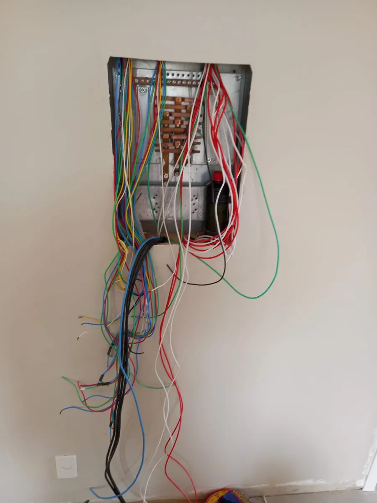

Curto-circuito é o que acontece quando a corrente encontra um caminho mais fácil do que o previsto, normalmente por contato direto entre fase e neutro, ou entre fase e terra. A resistência cai quase a zero, a corrente dispara em fração de segundo e o disjuntor deveria desarmar. Quando ele não desarma a tempo, ou quando a falha fica escondida na parede, o resultado pode ser fio derretido, faísca e incêndio. Entender de onde isso costuma vir ajuda a agir antes.
Isolamento ressecado e fiação velha
A capa plástica que cobre o fio não dura para sempre. Com os anos, calor e carga alta, ela resseca, racha e solta pedaços. O cobre fica exposto e basta uma vibração, uma mexida na tomada ou o contato com outro fio para fechar o circuito. É a causa mais comum em casas e apartamentos com mais de 20 anos. Os sinais de uma instalação nessa condição estão no post sobre fiação no fim da vida útil.
Umidade, infiltração e maresia
Aqui o Rio pesa. Chuva forte que infiltra por laje, parede ou caixa de passagem, vazamento de cano que escorre por dentro do eletroduto e a maresia das casas perto da orla corroem terminais e conexões. A água e o sal fazem a corrente passar por onde não devia. Áreas externas, banheiros, lavanderias e garagens são os pontos mais sujeitos. Tomada com oxidação esverdeada, quadro com marcas de ferrugem ou parede úmida junto a um ponto de energia merecem atenção imediata.

Emendas mal feitas e conexões frouxas
Fita isolante no lugar de conector adequado, fios torcidos à mão e parafusos de borne mal apertados criam pontos de aquecimento. Com o tempo, o calor deteriora o isolamento em volta e abre caminho para o contato entre condutores. Quem já viu um disjuntor ou uma tomada escurecida no ponto onde o fio entra viu esse processo acontecendo.
Sobrecarga que vira curto
Sobrecarga e curto-circuito são coisas diferentes, mas uma alimenta a outra. Um circuito carregado além do que o cabo aguenta esquenta o fio durante meses. O isolamento envelhece mais rápido e, um dia, cede. Por isso o disjuntor que desarma toda hora não deve ser tratado como incômodo. O post sobre disjuntor desarmando com frequência explica como separar sobrecarga passageira de problema real.
Aparelhos com defeito e animais
- Aparelhos danificados. Ventilador, carregador, ferro ou secador com cabo descascado ou resistência avariada podem provocar curto direto na tomada.
- Extensões e benjamins. Várias cargas num só ponto aquecem a conexão e o plugue.
- Roedores. Ratos roem a capa dos fios em forros, shafts e quadros, e deixam o cobre exposto.
- Obras e furos. Prego ou broca que atinge um eletroduto embutido é causa clássica depois de reforma ou instalação de suporte.
Como reduzir o risco
O que mais protege é o conjunto: fiação em bom estado, conexões bem feitas, DR instalado e funcionando, e aterramento correto. O DR detecta fuga de corrente e desliga o circuito antes que ela machuque alguém, e o aterramento dá um destino seguro para essa corrente. Teste o botão do DR uma vez por mês, evite extensões em série e não improvise emendas.
Quando chamar um eletricista
Chame quando sentir cheiro de queimado sem origem clara, quando houver faísca ou estalo na tomada, quando o disjuntor desarmar logo após ser religado, ou quando a casa sofreu infiltração perto de pontos elétricos. Nesses casos, desligue o circuito no quadro e não religue até a causa ser encontrada. A MCD atende mediante agendamento, faz a avaliação da instalação e passa o orçamento antes de qualquer execução.